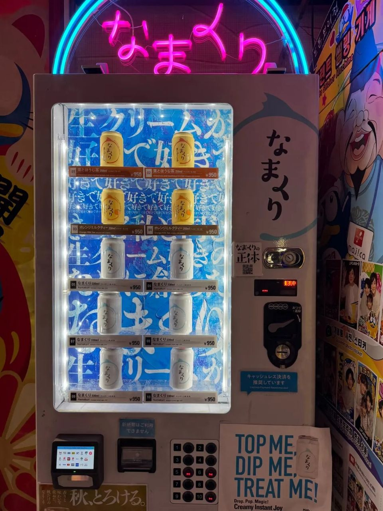
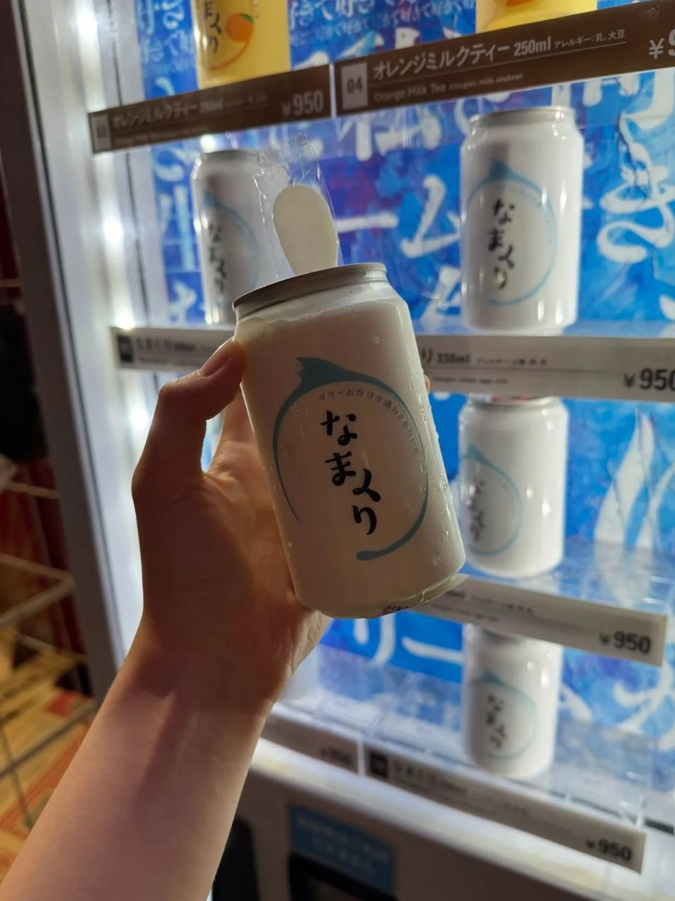
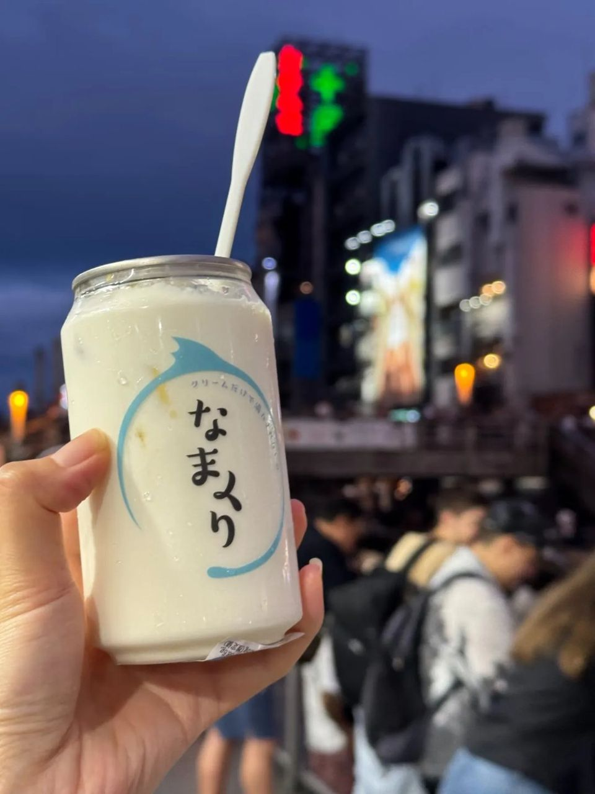

오사카 도톤보리 돈키호테 자판기 '생크림 캔', 뚜껑 따면 거의 다 크림 후기
관람차 앞 자판기에서 산 생크림 캔. 첫 입은 가볍지만 반 넘어가면 느끼해져요. 둘이 나눠 먹기 추천!
도톤보리 돈키호테 관람차 앞 자판기에서
생크림 캔을 뽑아 봤어요!!
솔직하게 풀어볼게요!

1. 관람차 앞 자판기에서 뽑는 캔!
- 위치: 일본 오사카 도톤보리, 돈키호테 관람차 있는 곳 자판기
- 참고: 자판기 상품은 바뀔 수 있어요

2. 뚜껑 따면 거의 다 크림!
뚜껑을 따면 진짜 거의 다 크림이고,
바닥에 스펀지가 조금 있어요.

3. 솔직 후기
첫 입은 생각보다 안 달고 가벼워서 '오 괜찮네' 했는데,
반 넘어가니까 생크림 퍼먹는 느낌이라 느끼해졌어요…
- 추천: 생크림 덕후라면 한 번쯤
- 팁: 둘이 나눠 먹는 걸 추천해요. 사진은 예쁘게 나와요 ㅎ